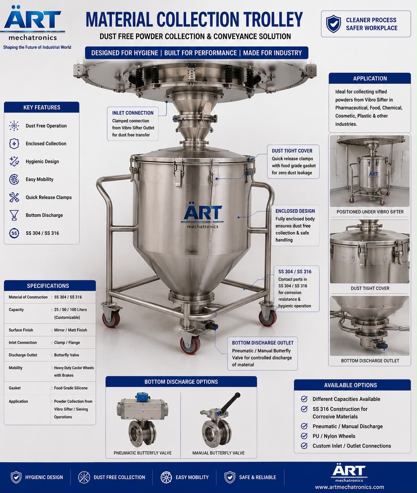

Industrial Movable Trolley (Material Handling, Transfer & Carrying System)
An Industrial Movable Trolley, also known as a Material Handling Trolley, Industrial Transfer Cart, Material Carrying Trolley, or Movable Utility Trolley, is a versatile industrial equipment designed for safe and efficient transportation, shifting, carrying, loading, unloading, storage, and…

About the Industrial Movable Trolley
Movable trolley systems are widely used for: ✔ Material transportation ✔ Internal factory logistics ✔ Product shifting operations ✔ Warehouse handling ✔ Production line material movement ✔ Utility and storage applications
The trolley improves: ✔ Material handling efficiency ✔ Workplace productivity ✔ Labor convenience ✔ Internal logistics management ✔ Product movement safety ✔ Industrial workflow optimization
Industrial movable trolleys are manufactured using: ✔ Stainless steel construction ✔ Mild steel construction ✔ Heavy-duty caster wheels ✔ Ergonomic handling structures
to ensure smooth, durable, and reliable industrial material movement operations.
Industrial movable trolleys are widely used in industries such as:
Food processing industries
Pan masala & tobacco industries
Pharmaceutical industries
Packaging industries
Warehousing & logistics industries
Chemical industries
Automobile industries
Manufacturing industries
where quick, safe, and efficient internal material transportation is essential.
The trolley is highly suitable for: ✔ Bag carrying ✔ Carton transfer ✔ Raw material movement ✔ Product transportation ✔ Tool handling ✔ Warehouse logistics
ART Mechatronics offers high-performance industrial movable trolleys, engineered for heavy-duty industrial operation, ergonomic handling, hygienic construction, and reliable long-term performance.
Working Principle of Industrial Movable Trolley
Raw materials, cartons, bags, containers, drums, or products are loaded onto trolley platform or storage section
Trolley is moved manually or through assisted movement using caster wheels and ergonomic handle system
Heavy-duty wheel arrangement ensures smooth movement across factory floors.
Trolley handles: ✔ Cartons ✔ Bags ✔ Drums ✔ Containers ✔ Tools ✔ Raw materials ✔ Finished products efficiently within industrial premises.
Industrial trolley helps: Reduce manual lifting effort Improve handling safety Organize factory workflow Minimize product damage
Trolleys can be used for: Production line support Warehouse operations Material storage Product dispatch Utility movement
Designed for continuous industrial transportation and handling operations
Types of Industrial Movable Trolleys
- 1. Platform Trolley
Designed for: ✔ Carton and bulk material transportation applications
- 2. Stainless Steel Trolley
Suitable for: ✔ Hygienic food and pharmaceutical industries
- 3. Heavy Duty Industrial Trolley
Uses: ✔ Large industrial load handling systems
- 4. Cage Trolley
Designed for: ✔ Safe storage and movement of products
- 5. Drum Handling Trolley
Suitable for: ✔ Drum and barrel transportation systems
- 6. Multi Shelf Utility Trolley
Designed for: ✔ Tool, component, and small product movement operations
Industries Using Industrial Movable Trolleys
🌿 Pan Masala & Mouth Freshener Industry Supari, packaging material, and carton movement systems 🚬 Tobacco Industry Tobacco material and pouch handling systems 🍃 Food Processing Industry Ingredient and finished product transportation systems 💊 Pharmaceutical Industry Hygienic material and medicine handling systems 📦 Packaging Industry Carton and packaging material transfer systems 🚚 Warehousing & Logistics Industry Internal warehouse material movement systems ⚗️ Chemical Industry Drum and raw material transportation systems 🏭 Manufacturing Industry Production material handling and transfer systems 💎 FEATURES & ADVANTAGES ✔ Easy and efficient material transportation ✔ Heavy-duty industrial construction ✔ Smooth wheel movement and ergonomic handling ✔ Improves workplace productivity and safety ✔ Reduces manual lifting effort ✔ Hygienic stainless steel design options available ✔ Low maintenance and durable operation ✔ Suitable for multiple industrial applications ✔ Compact and easy-to-maneuver design
Technical Highlights
Trolley Type: Platform trolley Cage trolley Drum trolley Utility trolley Construction: Stainless Steel (SS304 / SS316) Mild Steel (MS) Wheel System: Heavy-duty caster wheels PU wheels Nylon wheels Rubber wheels Features: Ergonomic handle Multi-shelf design Lockable wheels Heavy load platform Operation: Manual movement Optional motorized movement
Turnkey Industrial Trolley Solutions
ART Mechatronics offers: Complete industrial trolley solutions Material handling and transfer systems Customized utility trolley fabrication Warehouse handling equipment solutions Installation & commissioning After-sales service & AMC
Why Choose Art Mechatronics
Expertise in industrial material handling systems Customized trolley solutions for multiple industries High-performance and durable industrial construction Ergonomic and efficient handling designs Proven industrial performance across sectors
Applications
Food Processing Plants Pan Masala Manufacturing Units Pharmaceutical Industries Packaging Facilities Warehouses & Logistics Centers Manufacturing Plants
Call To Action
Looking for a High-Performance Industrial Movable Trolley for Material Handling Applications? Connect with our experts for: Industrial trolley and transfer cart solutions Material handling equipment systems Turnkey installation and customization
Request a Quote | Talk to Our Expert
PACKAGING
- POUCH/ SACHET/ STICK/ PACKET/ WRAPPER/ STRIP
Related Conveying & Handling machines
Get pricing & specs for the Industrial Movable Trolley
Tell us your product, capacity and process — our engineers will design a turnkey solution and send a quote. Typical reply within one business day.
One partner, from design to start-up
ART Mechatronics designs, manufactures, installs and commissions your Industrial Movable Trolley solution in-house — India · UAE · Thailand.